UDN
Search public documentation:
ExampleMapsComplexMovers
Interested in the Unreal Engine?
Visit the Unreal Technology site.
Looking for jobs and company info?
Check out the Epic games site.
Questions about support via UDN?
Contact the UDN Staff
Complex Movers
Document Summary: Two detailed examples of more complicated movers. Requires some familiarity with the basics of movers, suitable for intermediate skill levels. Document Changelog: Last updated by Tom Lin (DemiurgeStudios?), for document summary. Original author was Jason Lentz (DemiurgeStudios?).Introduction
The key to Movers, as with all animation, is timing. The tools for animating Movers are somewhat limiting on the surface, but with a little work you can get them to do complex things. In this document you will see how to create a couple special effects with the parameters you have access too. This document assumes that you know the basics of movers, are familiar with the UnrealEd Interface, and that you have access to or can create your own StaticMeshes. Also, this document assumes that your build has a player class as the Movers in this document require a player to activate them.Raising Prison Cell
This is the simplest Mover in this document. In this section you will create a series of Movers that will lock a player into a prison cell with a door shutting behind the player. Then a grate will open above the player's head while the floor is raised up to the upper level carrying the player with it. Once the player is at the upper floor, the grate returns, and then the floor returns to its original position.Ingredients
This is a relatively simple mover to construct. You'll need the following things to create this Mover though.- A level with two floors that overlap (so the prison cell can travel between them)
- StaticMesh(es) of a ceiling grate or trapdoor
- StaticMesh of a prison cell with floor (to raise the player up)
- StaticMesh of a prison door
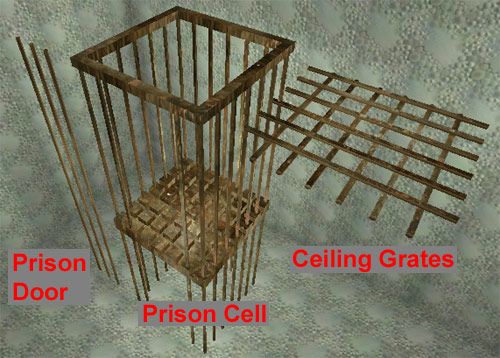
Note that the Prison Door and Prison Cell meshes extend well below what seems to be their bottom. This is to make it appear as if it is being pushed up from below and not just magically rising.Building the Cell
If you already have your cell, insert the StaticMesh of the floor into the bottom of the cell as a Mover (If you don't have your cell, build it now). Then place your ceiling grate StaticMesh (as a mover) in the hole in the floor above the prison cell. Be sure that there is no ceiling to the prison cell other than the grate so that the player isn't mashed into it when the floor mover raises.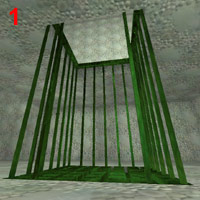
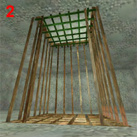
Now place the prison door StaticMesh in its open position. This example map has its prison door placed beneath the floor as it will rise from below to seal the player in.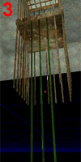
We are now ready to assign the KeyFrames and set up the Movers to activate in the order we want them.Setting the Mover Properties
First we'll set each of the Mover's InitialStates to TriggerOpenTimed and then add a Trigger in the middle of the cell. This Trigger will call the prison door StaticMesh to close so be sure the set its Event to the Tag of the prison door (in my case "PrisonDoor").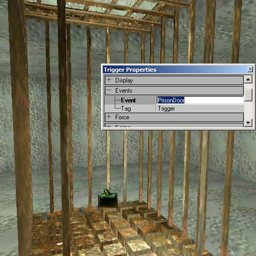
As long as we have door's properties window open we should set the rest of its properties. Under the Mover rollout, set its MoverEncroachType to ME_CrushWhenEncroach, NumKeys to 3, its MoveTime to 2 and its StayOpenTime to 2. Lastly, under MoverEvents, set its OpeningEvent to the Tag of the ceiling grate Mover (I've set mine to be "CeilingGrate." This will cause the ceiling grate Mover to start moving as soon as this Mover starts moving. Prison Door Properties: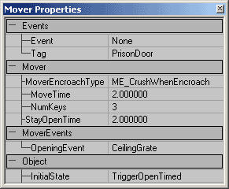
Next we'll set the ceiling grate Mover's properties. As mentioned above, in this example map, the ceiling grates Tag is "CeilingGrate." Note that there are two ceiling grates in this example map (one will be moving in from the X direction, the other will be moving in from the Y direction). Their properties, even the Tags, should be set identically, so to avoid human error, select both movers and then opened a properties window for both of them. Under the Mover rollout Set their MoverEncroachType to ME_IgnoreWhenEncroach, MoveTime to 2, NumKeys to 2, and StayOpenTime to 2. Under the MoverEvents set its OpenedEvent to the Tag of your cell floor ("PrisonCell" in my map). Now this Mover will activate the floor mover as soon as it's in its fully opened position so that the players will not be crushed upon the grate when the floor pushes them up. Ceiling Grate Properties: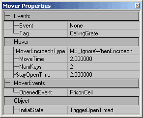
Now we will set the Mover Properties for the floor. It should have its own Tag (as stated above, the example map's floor mesh is given the Tag "PrisonCell"). Under the Mover rollout, set its MoverEncroachType to ME_IgnoreWhenEncroach, its MoveTime to 2 and its StayOpenTime to 2. Now we are ready to set the KeyFrames of each Mover. Prison Cell Properties: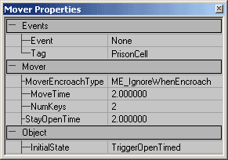
Assigning the KeyFrames
This is the easy part. For the ceiling grate Mover set its 0th KeyFrame at its closed position above the cell. Then set its 1st KeyFrame to its open position. There two ceiling grate Movers in this example map are set to slide out to different sides, one in the X direction and the other moving away in the Y direction.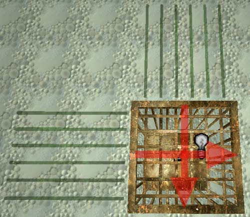
The prison cell Mover will start at its lower level position for KeyFrame 0 and then move up to KeyFrame 1 to place it level with the upper room.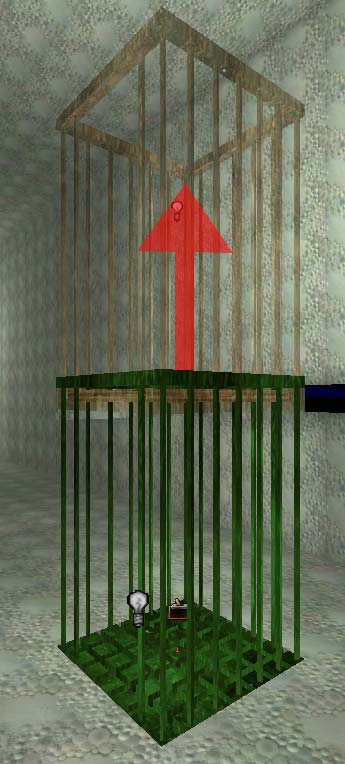
The prison door has 3 KeyFrames to set. KeyFrame 0 is in its open position, hidden beneath the floor in my map. KeyFrame 1 is in the door's shut position, and then KeyFrame 2 is set to be at the closed position while the prison cell is at its upper position.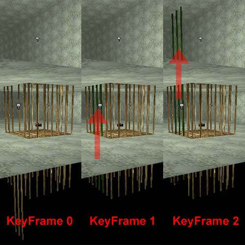
The rising prison cell is now complete. Go ahead and run your map and test it out. The timing is the crucial part of this combination of movers. Experiment with the StayOpenTimes, MoveTimes, as well the use of the different MoverEvents to get the precise timing that you need for your own movers.More Than 8 KeyFrames
As is, Movers can only have up to 8 different KeyFrames, but using a simple trick and a little bit of smoke and mirrors, you can have a Mover with as many KeyFrames as you desire, but with one catch; you can only use it once per level. In this section you will see how to make a short roller coaster ride that has many more than 8 Keyframes but which will unfortunately only be able to be triggered once.Ingredients
- One Roller Coaster Car Mover of your choice for your Main Mover
- One Low Poly Mover that has an obvious front (like a triangle) for a Mover Guide
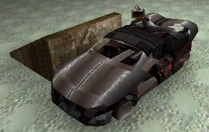
Setting up Mover Guides
First we're going to set up a path of Mover Guides that our roller coaster car will follow. Think of these Mover Guides as KeyFrames for the KeyFrames. Once we have the properties of each of the Mover Guides set we will place them in the path that you want your Main Mover to travel but each Mover Guide will have their basic 8 KeyFrames to get to the next Mover Guide. Before we set that up though, let's assign all of their properties we can at one time. Add your Low Poly Mover to your level and then set the following properties in its properties window- Advanced --> bHidden: True
- Collision --> Set all of the values to False
- Events --> Tag: "MoverGuideName" (named MG in this map)
- Movement --> AttachTag: "MoverGuideName"
- Mover --> MoverGlideType: MoveByTime
- Mover --> NumKeys: 8 (assuming you want all 8 KeyFrames per Mover Guide)
- Mover --> bTriggerOnlyOnce: True
- Mover --> bUseShortestRotation: True
- MoverEvent --> OpenedEvent: "MoverGuideName"
- Object --> InitialState: TriggerOpenTimed
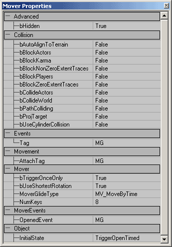
There are still a few more properties you have to set, but by setting all of the above properties at once, you save yourself a little time. Now we can begin placing the Mover Guides into the level. You can place them anywhere really since they won't collide with anything, and since they are set to bHidden True you won't be able them anyway. For simplicity's sake, we'll place them in the path of your Main Mover that we will be adding later. So set up the KeyFrames for your first Mover Guide starting at the position and orientation you want your Main Mover to be in and then change the following properties where n = the number of the Mover Guide starting with 0:- Events --> Tag: "MoverGuideName" n (MG0 in this map)
- Movement --> AttachTag: "MoverGuideName" n+1
- MoverEvent --> OpenedEvent: "MoverGuideName" n+1
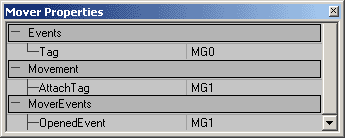
The below image is what the example level looks like once all the Mover Guides are in place including a rough path of where all the KeyFrames will take the Main Mover.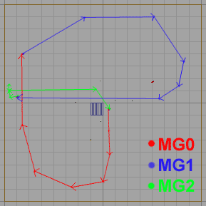
You could also vary the number of KeyFrames and MoveTimes for each Mover Guide to speed up and slow down the path of the Main Mover. Otherwise if you want a constant speed, you should space their KeyFrames equidistant from each other and do not alter the MoveTime.Setting up the Main Mover
Now we are ready to place the Main Mover. Add the Mover that you wish to be the actual Mover that follows these Mover Guides and place it at the start of the chain of Movers. Now set the following properties for this Mover:- Movement --> AttachTag: "MoverGuideName"0 (same as the first Mover Guide's Event Tag)
- Mover --> MoverEncroachType: IgnoreWhenEncroach
- Object --> InitialState: None
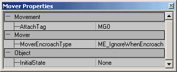
Now, place a Trigger on the Main Mover or wherever you want the Trigger to be. Set its Events --> Event to be the name of your first Mover Guide (MG0 in this map), and you'll have a functioning roller coaster! Go ahead and run your map to test it out. It is unfortunate that you can only trigger this series of Movers once, but if the bTriggerOnlyOnce field is left to be False, then once the Mover Guides finish their loop, then they will all travel backwards through their KeyFrames simultaneously. You could conceiveably duplicate your loop of Movers several times, placing them in the same circuit and have them loop for as many times as you care to duplicate the circuit. This solution is not ideal, but until Unreal allows more than 8 KeyFrames, this is the only solution.Additional Resources
Movers With More Than 8 Keys (tutorial) (Unreal Wiki - Beyond Unreal)Downloads
Below you can download a compressed archive that contains the content for this example:- 2110EM_ComplexMovers.zip (for Unreal Engine 2 build 2110)
- EM-ComplexMovers.zip (for Unreal Engine 2 build 2226)